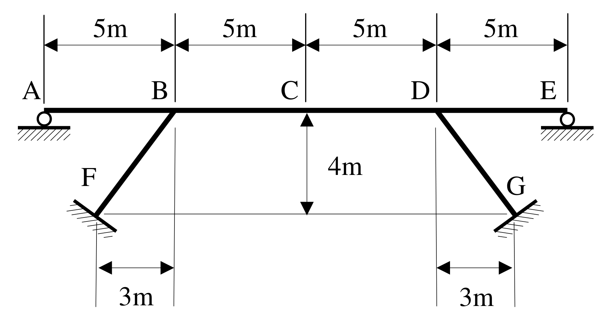
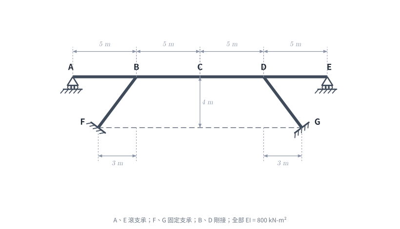
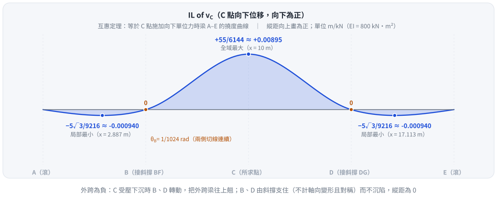

📄 題目正本（考卷原文、附圖與判讀清單；不含解法）
SA-2018-4 題目正本
本檔只記錄考卷上寫了什麼、圖上畫了什麼，不含任何解法。解析見同資料夾
SA-2018-4.md。
判讀清單經使用者確認前，狀態為「待確認」；確認後本檔原則上不再修改（改動須回考卷原圖並記 log）。
| 項目 | 內容 |
|---|---|
| 考卷 | raw/exams/SA-2018_結構學.pdf，第 2 頁（頁次 2－2），第四題 |
| 考年 | 2018（民國一百零七年）專技高考結構工程技師「結構學」 |
| 配分 | 25 分 |
| 附圖 | SA-2018-4-fig-2.png（2026-11-07 重新擷取）；既有 SA-2018-4-fig-1.png |
| 判讀狀態 | 已確認（2026-11-07 使用者確認。原轉錄：2026-11-07 轉錄；PyMuPDF 110 dpi 整頁＋450–1200 dpi 局部放大；考卷可抽文字，逐字原文以 PDF 文字層核對；盲讀於開啟解析前完成） |
1. 考卷原文（逐字）
四、靜不定橋梁結構如下圖，A、E 為滾支承，F、G 為固定支承。請在上部梁 A-B-C-D-E 上繪出中點 C 向下位移的影響線。請註明正負並標明所有局部最大、最小值。假設所有斷面 EI 皆為 800 kN-m²，且只考慮撓曲變形，不計軸向變形和剪切變形。靜不定結構分析方法不限制。（25 分）
2. 考卷給的公式、附表與參數
- 考卷沒有給任何參考公式或附表。
- 所有斷面 EI = 800 kN-m²；只考慮撓曲變形，不計軸向與剪切變形。
- 卷首注意事項：㈠可以使用電子計算器。㈡不必抄題，作答時請將試題題號及答案依照順序寫在試卷上，於本試題上作答者，不予計分。㈢本科目除專門名詞或數理公式外，應使用本國文字作答。
- 考試時間：2 小時。
3. 附圖

證據圖 SA-2018-4-fig-2.png（2026-11-07 自考卷 500 dpi 重新擷取）；既有 SA-2018-4-fig-1.png 帶有滑鼠游標（手形游標在左側 3m 尺寸線旁），保留不改。
圖面文字照錄：5m、5m、5m、5m、A、B、C、D、E、4m、F、G、3m、3m
4. 判讀清單
| # | 項目 | 判讀 | 圖上／題文依據 | 把握 |
|---|---|---|---|---|
| 1 | 座標（以 A 為原點） | A(0,0)、B(5,0)、C(10,0)、D(15,0)、E(20,0)；F(2,−4)、G(18,−4) | 上方 4×5m 尺寸線；C 下 4m 尺寸線至 F–G 連線；下方 3m 尺寸線自 F、G 量到 B、D 鉛垂線（450 dpi） | 確定 |
| 2 | 斜撐 | BF、DG，長 5 m，B、D 處向外下斜（呈「八」字張開） | 圖面 | 確定 |
| 3 | 節點 B、D | 梁與斜撐剛接（無鉸圈） | 圖面 | 確定（解讀）；使用者確認 |
| 4 | 支承 A、E | 滾支承（圓圈＋剖線） | 題文＋圖面 | 確定 |
| 5 | 支承 F、G | 固定支承（垂直於斜撐的板＋剖線） | 題文＋圖面 | 確定 |
| 6 | EI | 全部構件 800 kN-m² | 題文 | 確定 |
| 7 | 所求 | 上部梁 A–E 上單位力移動時，C 點向下位移的影響線；註明正負、標出所有局部極大極小值 | 題文 | 確定 |
| 8 | 變形假設 | 只考慮撓曲；不計軸向（梁與斜撐軸向不變形）與剪切 | 題文 | 確定 |
轉錄：2026-11-07（SA-U1-3 題目正本推廣・批 1）
確認：2026-11-07 使用者確認
考題編號：SA-2018-4
主分類： SA-U1-3 靜定及靜不定結構影響線
副分類： 無
分析法： 馬克士威-貝提互惠定理 (Maxwell-Betti Reciprocal Theorem) + 傾角撓度法
標籤： 影響線, 靜不定結構, 對稱性, 剛架位移
1. 題目（考卷原文見題目正本）
考卷原文、公式／附表、附圖與判讀清單（已確認）見
SA-2018-4-problem.md。本節只列解題時最容易讀錯的地方與本解使用的記號；題意以題目正本為準。

重繪自考卷附圖，依判讀清單 #1–#8 重繪。攔：斜撐方向讀反（F、G 在 B、D 外側）、F、G 讀成鉸支承。
常見誤讀
| 項目 | 正確判讀 | 常見誤讀 |
|---|---|---|
| 斜撐位置 | F 在 B 左方 3 m、G 在 D 右方 3 m，皆在梁下 4 m（向外張開） | 向內收 |
| F、G 支承 | 固定支承 | 鉸支承 |
| B、D 接頭 | 剛接（考卷無鉸圈） | 鉸接 |
| 所求 | 單位力沿 A–E 移動時 C 點向下位移的影響線 | C 點彎矩影響線 |
本解記號： 記號與正負號約定沿用 §4。
1.5 核心觀念與物理簡化
依據 馬克士威-貝提互惠定理 (Maxwell-Betti Reciprocal Theorem)，要求 C 點向下位移 $v_C$ 的影響線 $IL_{v_C}(x)$，其形狀與數值完全等同於在 C 點施加一單位向下力 ($P=1$) 時，整個梁 A-B-C-D-E 的撓度曲線 $v(x)$。
1.1 對稱性與運動學分析
當我們在 C 點施加向下單位力時，結構幾何與載重呈現完全對稱。
- 由於忽略所有軸向變形 ($EA = \infty$)，梁 A-E 各點的水平位移必須相同，設為 $u$。
- F、G 為固定端。斜向構件 BF 與 DG 長度皆為 $\sqrt{3^2 + 4^2} = 5\text{ m}$。
- 對於構件 BF，B 點位移必須與 BF 垂直，故運動學限制為 $3u + 4v_B = 0 \implies v_B = -0.75u$。
- 對於構件 DG，D 點位移必須與 DG 垂直，限制為 $-3u + 4v_D = 0 \implies v_D = 0.75u$。
- 然而，因為結構與載重對稱，結構的變形也必然對稱，即 $v_B = v_D$。
- 代入後得到 $-0.75u = 0.75u \implies u = 0$。進而得出 $v_B = 0$ 且 $v_D = 0$。
重要結論： 在 C 點施加對稱載重時，結構不發生側移，且 B、D 兩點不發生垂直位移！因此，B 與 D 可視為剛性鉸支承。
同時，斜向構件 BF 與 DG 兩端皆無平移，僅在 B、D 點隨梁旋轉。這兩根構件提供了轉動勁度 $K = \frac{4EI}{L_{BF}} = \frac{4(800)}{5} = 640 \text{ kN-m/rad}$。
2. 傾角撓度法求解
將梁視為連續梁，在 B、D 點有剛性垂直支承與旋轉彈簧。
利用對稱性，$\theta_C = 0$。我們來解節點 B 的轉角 $\theta_B$。
- AB 段 (L=5m)：A 為滾支承 ($M_A=0$)，故 $M_{BA} = \frac{3EI}{L} \theta_B = \frac{3(800)}{5} \theta_B = 480 \theta_B$。
- BF 段 (旋轉彈簧)：$M_{BF} = 640 \theta_B$。
- BD 段 (L=10m)：跨中 C 點受 $P=1$。兩端固定彎矩 (FEM) 為 $\pm \frac{PL}{8} = \pm \frac{1(10)}{8} = \pm 1.25 \text{ kN-m}$。
$M_{BD} = \frac{2EI}{10} (2\theta_B + \theta_D) - 1.25$。因對稱性 $\theta_D = -\theta_B$，
$M_{BD} = \frac{EI}{5} \theta_B - 1.25 = 160 \theta_B - 1.25$。
節點 B 力矩平衡：
$$ M_{BA} + M_{BF} + M_{BD} = 0 $$
$$ 480 \theta_B + 640 \theta_B + 160 \theta_B - 1.25 = 0 \implies 1280 \theta_B = 1.25 \implies \theta_B = \frac{1}{1024} \text{ rad} $$
將 $\theta_B$ 代回求桿端彎矩：
- $M_{BA} = 480 \times \frac{1}{1024} = \frac{15}{32} \text{ kN-m}$ (對 AB 段為負彎矩，即上方受拉)。
- $M_{BD} = 160 \times \frac{1}{1024} - 1.25 = -\frac{35}{32} \text{ kN-m}$ (對 BD 段為負彎矩)。
3. 影響線數值計算 (撓度曲線)
3.1 跨度 AB (與跨度 DE 對稱)
AB 段僅受端彎矩 $M_B = -15/32 \text{ kN-m}$，無跨中載重。
其撓度曲線 (向下為正)：
$$ v(x) = \frac{M_B\, x (L^2 - x^2)}{6 EI \cdot L} = \frac{(-15/32)\, x (25 - x^2)}{6(800)(5)} = \frac{x (x^2 - 25)}{51200} $$
欲求局部極值，令 $v'(x) = 0 \implies 3x^2 - 25 = 0 \implies x = \frac{5}{\sqrt{3}} \approx 2.887 \text{ m}$ (自 A 點起算)。
代入得局部最小值 (最大向上位移)：
$$ v_{min} = -\frac{5\sqrt{3}}{9216} \approx -0.000940 \text{ m} $$
3.2 跨度 BD (計算 C 點最大值)
BD 段長 10m，跨中受 $P=1$，兩端受負彎矩 $M = -35/32 \text{ kN-m}$。
C 點位移為懸垂位移與端彎矩位移的疊加：
$$ v_C = \frac{P L_{BD}^3}{48 EI} + \frac{M L_{BD}^2}{8 EI} = \frac{1 \times 10^3}{48(800)} - \frac{(35/32) \times 10^2}{8(800)} $$
$$ v_C = \frac{1000}{38400} - \frac{3500}{204800} = \frac{5}{192} - \frac{35}{2048} = \frac{160 - 105}{6144} = \frac{55}{6144} \approx 0.00895 \text{ m} $$
此即為全結構影響線的正向最大值。
4. 影響線繪製重點整理
影響線 $IL_{v_C}(x)$ 之特徵如下：
- A 點 ($x=0$)：0
- A~B 區段：影響線為負值 (代表載重在此區段會使 C 點上抬)。
- 局部最小值發生在距離 A 點 $\frac{5}{\sqrt{3}} \approx 2.887\text{m}$ 處，值為 $-\frac{5\sqrt{3}}{9216} \approx -0.000940 \text{ m/kN}$。
- B 點 ($x=5\text{m}$)：0
- B~D 區段：影響線為正值 (載重在此區段使 C 點下沉)。
- 全域最大值發生在中點 C ($x=10\text{m}$)，值為 $\frac{55}{6144} \approx 0.00895 \text{ m/kN}$。
- D 點 ($x=15\text{m}$)：0
- D~E 區段：對稱於 A~B，影響線為負值。
- 局部最小值發生在距離 E 點 $\frac{5}{\sqrt{3}}\text{m}$ (即 $x \approx 17.113\text{m}$) 處，值為 $-\frac{5\sqrt{3}}{9216} \approx -0.000940 \text{ m/kN}$。
- E 點 ($x=20\text{m}$)：0

圖 2 C 點向下位移影響線（互惠定理：即 C 點受向下單位力時梁 A–E 的撓度曲線）。攔的是把外跨 AB、DE 畫成 0 —— B、D 不沉陷但會轉動，外跨被翹起而為負；以及漏掉斜撐的轉動勁度、把 BD 當簡支梁（C 值會變成 $\frac{5}{192}$）。
修正日期：2026-11-07（§1 改為指向題目正本並放重繪附圖（figs/SA-2018-4-fig-1-problem.svg）、加常見誤讀；原解析無題目重述，新增 §1，原 §1「核心觀念與物理簡化」改為 §1.5；圖由 gen_SA-2018-4.py 產生，可重跑）
圖解補繪：2026-11-07（圖 2 影響線，向量圖，腳本 gen_SA-2018-4_il.py，可重跑）
修正日期：2026-11-07（表述更正（非勘誤）：§3.1 中間式改為 $M_B\,x(L^2-x^2)/(6EIL)$（正彎矩向下撓為正），原寫法代入 $M_B = -15/32$ 與最終式差一個負號；最終式與極值不變）